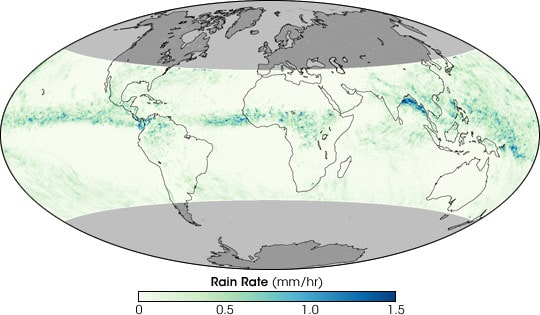
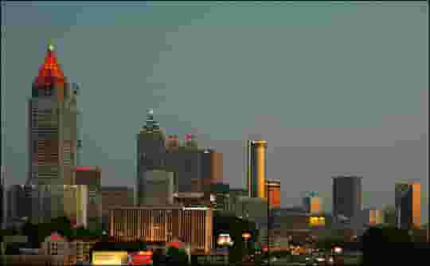

Concrete Skies
and Asphalt Breezes
Unraveling the Urban Weather Phenomenon
A typical summer day at NASA Goddard Space Flight Center in Greenbelt, Maryland, dawns clear, warm, and sticky-humid, with the promise of misery by mid-day. As it climbs higher in the sky, the Sun swims through the thin haze generated by thousands of automobiles, and by the time it has dropped past its zenith, it is joined by downy piles of clouds. From an office at Goddard, the light streaming in through the window begins to dim as the clouds pile up, but that can be ignored until a distant rumble shakes the sky. By now it is late afternoon, and the office hallways are suddenly busy as people scramble to leave, hoping to reach home before Washington, D.C., traffic grinds to a halt in the sudden downpour. All of this Dr. Marshall Shepherd, an Associate Professor of Atmospheric Sciences and Geography at the University of Georgia, observed summer after summer while studying weather and climate at NASA, but while he might have sometimes worried about what rain might do to the city—water puddling on the road or overwhelming storm drains near his house—his real concern was what the city was doing to the rain. “Cities impact rainfall and can create their own rain and storms,” Shepherd explains. Though the meteorologist and climate scientist noticed the thundershowers that frequently capped off a summer day in the Washington-Baltimore region, he wasn’t aware that the cities might be influencing the rain until he noticed heavy rainfall around cities in satellite data. Reviewing the work of other scientists to determine what caused the anomaly, he learned that scientists suspected that cities were causing more rain to fall, but the connection was far from definite. He came across many theories about how cities might influence rain, but discovered that the exact process remained unknown. Shepherd realized that figuring out if and how cities affect rainfall was more than just an interesting scientific challenge. If the connection was real, weather forecasting, hydrologic, and climate models would need to take city-induced rain into account when warning people about potential flooding rains, storms, and even future climate change. It was clear to Shepherd that the problem was only going to get worse: as cities around the world continued to grow, they would be able to change weather patterns on an increasingly larger scale. Shepherd believed NASA’s fleet of Earth-observing satellites could help him understand how cities influence rain. Previous work relied primarily on field experiments around one or a few cities. Satellite data provided a way to look at many cities under varying conditions. Shepherd decided to see if NASA satellites could confirm that more rain falls around cities in general, and then take a more detailed look at individual cities to see what the satellite data could tell him about how the city influenced rain. Ultimately, Shepherd hoped he and others could use the data to generate computer models that would provide insight into how cities influence rain today and how their influence might change in the future.
Discovering Urban Rain
When Shepherd first started studying satellite rainfall data, he wasn’t interested in urban rain; he just wanted to understand small-scale weather processes along the U.S. Gulf Coast. During the summer, weather tends to be generated by local processes: hot, humid air piles up along the face of a mountain, triggering a thunderstorm; cool moist air blows off a lake, collides with hot air over land, and rain clouds form. Though these and other local processes are still at work at other times of the year, they tend to get swallowed up by large weather fronts that bulldoze their way across a continent, leaving wide swaths of snow or rain in their wake.
It was the local weather-making processes that Shepherd wanted to learn about in 2001 when he started to look at coastal rainfall. NASA, in collaboration with the Japanese space agency, had launched a new satellite late in 1997 that was sending back the best estimates of rainfall in the tropics to date. By early 2001, the satellite had accumulated a three-year record. The record was long enough to begin to reveal year-to-year rainfall patterns. Shepherd was eager to see if the satellite had captured rainfall produced by local-scale events. As he surveyed the satellite data, he was looking for things like rainfall patterns created when a sea breeze interacts with coastal topography, but the pattern he saw emerging from the data of the southern United States surprised him.
The third hypothesis runs along the same lines, but instead of causing the air to pile up, the city divides the air. “Storms that are approaching Atlanta or Baltimore from the west basically split or ‘bifurcate’ around the cities because of the physical structure of the buildings or because of the thermodynamic environment [the urban heat island],” says Shepherd. When the two halves of the storm come back together downwind of the city, the air is pushed up like the two colliding trains. The rising air forms rain clouds.
“I started noticing that around some of the cities, there seemed to be these anomalies in rainfall downwind,” Shepherd recalls. These downwind areas got more rain during the summer than other areas. Having spent his childhood in Atlanta, the idea that his city could be directly affecting the weather intrigued Shepherd. Had anyone else noticed this spike in rainfall? He combed through past studies and discovered that for more than a century, scientists had suspected that cities impact or maybe even create rain. Cities, Shepherd learned, are among the local factors that influence summer weather.
“You need three basic ingredients for clouds and rainfall to develop,” Shepherd explains. “You need for air to be unstable.” Air is unstable when it is warmer than the air that surrounds it. Once the air is lifted, it will continue to rise. That instability usually happens when warm air nearest the Earth is pushed up into the cooler air above it. That leads to the second ingredient: a source of lift. “You need something that will get the air rising, whether that be a cold front, or a mountain, or a sea breeze, or a city.” When surrounded by cooler air, the warm air rises naturally like a hot air balloon. “Three, you need moisture.” If there is enough moisture in the rising, cooling air, the water vapor will condense into clouds and rain. But where does the city enter the process?
The energy use of office work consists of multiple components: the energy use of the building itself (office equipment, heating, cooling and lighting), the energy used for commuting to and from the office, and the energy used by the communications networks that office work depends on. It also includes people who are not working in the office but who plug in their laptops in a place outside the office, which is also lighted, heated or cooled. As far as I could find out, nobody has ever tried to calculate the energy footprint of office work, taking all these components into account. We know more or less how much energy is used by commuting and telecommunication, but we don’t know how much of that is due to office work. Most information is available for the energy use of office buildings – the icons of today’s global knowledge economy. However, even in this case information is limited because most national statistics do not distinguish between different types of commercial buildings. The main exception is the US Commercial Buildings Energy Consumption Survey (CBECS), which is undertaken since 1979 and is the most comprehensive dataset of its type in the world. It further categorises offices into administrative or professional offices (such as real estate sales offices and university administration buildings), government offices (such as state agencies and city halls), banks and financial offices, and health service administrative centers. 5 The modern, American-style office building—a design increasingly copied all over the world—is an insult to sustainability. Per square metre of floorspace, US office buildings are twice as energy-intensive as US residential buildings (which are no examples of energy efficiency either). 56789 In 2003, the most recent year for which a detailed analysis of office buildings was presented (published in 2010), there were 824,000 office buildings in the USA, which consumed 300 trillion Btu of heat and 719 trillion Btu of electricity. 10 The electricity use alone corresponds to 210 TWh, which equals a quarter of total US electricity produced by nuclear power in 2015 (797 Twh with 99 reactors). In other words, the US needs 25 atomic reactors to power its office buildings. 1112 From 2003 to 2012, the number of US office buildings grew by more than 20%. 5
The Impact of City Landscapes on Rain
“There’s a debate about how cities affect rainfall,” Shepherd answers. “There are several hypotheses about what is going on, but they primarily involve the urban land use and urban aerosols.” The first hypothesis deals with the urban “heat island” effect. Cities are made of heat-absorbing materials like concrete, steel, and asphalt. Add to that the heat pumped into the atmosphere by the machines that are concentrated in cities and a lack of cooling vegetation, and the temperature goes up. Average temperatures in a city can be as much as six to eight degrees Fahrenheit higher than surrounding rural and suburban landscapes. Called the urban heat island effect, this increased temperature may provide a source of unstable air. If air over a city is warmer than the air surrounding it, it wants to rise. As the city-warmed air rises, it cools and forms rain-producing clouds that soak the area downwind.
Second, cities may be disrupting the flow of air over the Earth’s surface. “If you blow air over a nice pristine wheat field in Kansas, that air at a very low level is going to blow in a straight line,” says Shepherd. But blow that same air over a city, and you get chaos, literally. “Cities tend to have buildings, particularly tall buildings, that cause the air to converge, or pile up,” says Shepherd. “Think of two trains colliding; their front ends go up. That’s convergence.” So the city’s buildings provide a source of lift to push warm, moist, surface air into the cooler air above it, where it can develop into rain clouds.
The third hypothesis runs along the same lines, but instead of causing the air to pile up, the city divides the air. “Storms that are approaching Atlanta or Baltimore from the west basically split or ‘bifurcate’ around the cities because of the physical structure of the buildings or because of the thermodynamic environment [the urban heat island],” says Shepherd. When the two halves of the storm come back together downwind of the city, the air is pushed up like the two colliding trains. The rising air forms rain clouds.
The Impact of Urban Pollution on Rain
City pollution may also impact cloud formation and rainfall. “Water vapor doesn’t ordinarily spontaneously condense into drops to form clouds,” says climate scientist Tom Bell, from NASA Goddard Space Flight Center. “It needs dirt to form around. All rain needs aerosols to form.” In the natural world, cloud-forming aerosols are things like sea salt, dust, and pollen, all of which are large particles. But pollution aerosols are usually smaller and more numerous than natural aerosols. With lots of particles to collect on, water coalesces into many tiny droplets instead of larger rain-sized drops. The impact on rain, says Bell, varies depending on where the clouds form. In some cases, urban aerosols suppress rain, but in others they increase it.
What causes the difference? Scientists are still working on that question, but Bell and others believe that the temperature difference between the air near the ground and the atmosphere above may be one key difference. “Bubbles of hot air form over land and rise like a bubble in a pot of boiling water,” says Bell. The rising air cools, and many tiny droplets form around urban aerosols. These small drops are not large enough to fall, so the storm tends not to produce rain.
More rain can occur when the bubble of heated air forms over a very warm area, however. “The bubble of heated air rises faster and climbs higher in the atmosphere,” says Bell. Because of urban pollution, “droplets that would normally fall out at a lower elevation are smaller and go higher.” Now high in the atmosphere, the tiny water droplets turn to ice. To make the transition from liquid to solid, the water molecules have to release heat. “The added heat kicks in an ‘afterburner,’ and the bubble of air is pushed up higher and faster,” Bell explains.
“The extra boost makes the storm act like a vacuum cleaner,” says Bell. “Something needs to replace the rising air, so more moist air is sucked up.” This vacuum-cleaner effect allows the storm to pull in more material to work with than it would have without the urban aerosols, and more rain results. “The effect only happens when fast-rising air would form a thunderstorm anyway, and when the air near the surface is moist,” Bell adds.
Chances are, the urban heat island, city structures, and pollution all interact to alter rain storms around cities. “The real question is which combination of those is the most important factor,” says Shepherd. “Which of those takes the most precedence at the beginning? Is there one of those that takes more precedence at the end, once rainfall gets started? That’s what we’re trying to study right now.”
The key to discerning how aerosols, city structures, city heat, and weather systems interact, says Shepherd, may very well be NASA’s fleet of Earth-observing satellites. Taken together, the satellites are providing unprecedented information about land use, cloud structure, rainfall, and aerosols that can then be integrated into models to sort out the intricacies of urban rain. “We need these integrated observing systems like Aqua, CALIPSO, Cloudsat, TRMM, and eventually the Global Precipitation Measurement Mission, along with models to answer these integrated questions,” says Shepherd.
Satellites See City Rain
It was with these questions in mind—do cities influence rain and if so how—that Shepherd set out to see what NASA satellite data could contribute. The satellite data he had been looking at when he noticed the apparent urban rain anomaly in the first place were from a satellite called the Tropical Rainfall Measuring Mission (TRMM). Among its suite of instruments, TRMM (which scientists pronounce “trim”) carries the world’s only space-based precipitation radar. Like the radar that you see on the evening weather report, TRMM’s Precipitation Radar bounces radio waves through the atmosphere to measure rainfall. The difference is that all other radar systems are ground-based, and therefore have a limited range, whereas TRMM can observe everywhere between about 40 degrees north and south. When combined with GOES weather satellite and rain-gauge data, the rain data analysis can be extended to even higher latitudes. What’s more, because rainfall is measured with a single instrument, TRMM’s estimates in one city can be compared to estimates from another city, something that is difficult to do with two different ground-based systems.
Pioneering though the instrument is, Shepherd feared that the rainfall data might not be detailed enough to measure the urban rain effect. Each pixel, or data point, that the Precipitation Radar detects measures four kilometers across, and the gridded (combined and mapped) data is even coarser. If the urban rain effect was small, TRMM might not pick up enough data points to detect elevated rainfall totals over and downwind of cities. “But if we could use that satellite data in conjunction with other data sets, then at least we could look at many different cities around the world if we wanted to,” says Shepherd. Spurred by that thought, Shepherd set out to take a careful look at the Precipitation Radar’s rainfall record.
Working with colleagues Harold Pierce and Andrew Negri, both at NASA Goddard, Shepherd focused on five cities in the south-central and southeastern United States that were not near mountains, major rivers, or oceans—features that themselves impact rainfall. “We wanted to try to isolate that the urban environment was the only thing affecting the circulation,” he explains. He divided this area into a grid where each box measured 0.5 degrees by 0.5 degrees (very roughly a 55 by 55 kilometer square) and tabulated the average amount of rain that fell every hour in each box during the summer (May to September). He then averaged the rain rates over the three summers during which TRMM had collected data, 1998 to 2000, and identified where the most rain fell. He found that the amount of rain that fell per hour was as much as 20 percent greater in grids that were downwind of cities than it was in grids upwind of the city. These results were consistent with ground-based studies of the same regions. It seemed that the cities were generating rain and TRMM could measure the effect, but Shepherd wanted a little more confirmation. He set up a series of rain gauges in Atlanta and recorded how much rain fell around the city during a year. He compared those measurements to TRMM’s measurements. The ground and satellite measurements matched: urban rainfall was real, and TRMM could detect it.
Evening storms frequently strike southern cities in the summer, bringing thunder, lightning, and heavy rain. The confluence of cities and storms may not be a coincidence: more rain falls downwind of some major urban areas than in the surrounding countryside. Satellite measurements and computer models are helping scientists understand why. (Photograph copyright Eugenia y Julian.)
Marshall Shepherd, of the University of Georgia, uses NASA satellites such as the Tropical Rainfall Measuring Mission (TRMM) to study weather and climate. (Photograph courtesy Marshall Shepherd.)
 Summer afternoon thunderstorms are a common occurrence near the Gulf Coast. Humid air rising off the hot ground cools as it ascends. The water vapor in the air condenses, and clouds form. These storms sprang up along the border between Texas and Louisiana on September 6, 2006. (Image and animations by Robert Simmon, based on NOAA GOES super rapid-scan data.)
Summer afternoon thunderstorms are a common occurrence near the Gulf Coast. Humid air rising off the hot ground cools as it ascends. The water vapor in the air condenses, and clouds form. These storms sprang up along the border between Texas and Louisiana on September 6, 2006. (Image and animations by Robert Simmon, based on NOAA GOES super rapid-scan data.)
 Measurements from TRMM revealed elevated rain rates downwind of urban areas in Texas. Marshall Shepherd noticed the pattern in summer rainfall while exploring the interactions between sea breezes and the urban landscape of Houston. The heaviest rain (blue) occurred downwind of Houston. This image is based on TRMM and rain-gauge measurements during July, August, and September from 1998 through 2006. (Map by Robert Simmon and Jesse Allen, based on Global Precipitation Analysis data.)
Measurements from TRMM revealed elevated rain rates downwind of urban areas in Texas. Marshall Shepherd noticed the pattern in summer rainfall while exploring the interactions between sea breezes and the urban landscape of Houston. The heaviest rain (blue) occurred downwind of Houston. This image is based on TRMM and rain-gauge measurements during July, August, and September from 1998 through 2006. (Map by Robert Simmon and Jesse Allen, based on Global Precipitation Analysis data.)
 The roofs, concrete, and asphalt of a city absorb heat during mid-day, raising the surface temperature up to 10°C. This pair of satellite images shows Atlanta on September 28, 2000. In the true-color image (top), the urban areas are gray, and wooded suburbs and open fields are green. The map of surface temperature (bottom) shows the urban heat island. Yellow areas are relatively cool, while red areas are hot. (NASA images by Marit Jentoft-Nilsen, based on Landsat-7 data.)
The roofs, concrete, and asphalt of a city absorb heat during mid-day, raising the surface temperature up to 10°C. This pair of satellite images shows Atlanta on September 28, 2000. In the true-color image (top), the urban areas are gray, and wooded suburbs and open fields are green. The map of surface temperature (bottom) shows the urban heat island. Yellow areas are relatively cool, while red areas are hot. (NASA images by Marit Jentoft-Nilsen, based on Landsat-7 data.)
 Like urban pollution, the aerosols in ship exhaust change the properties of clouds. These satellite images show clouds over the North Atlantic streaked with ship tracks. The top image is similar to a digital photo, while the bottom image shows the size of cloud droplets from pink (smallest) to green (largest). Compared to droplets formed from naturally occurring aerosols like dust or sea-salt, droplets formed from pollution aerosols are smaller and more numerous. The ship tracks in the image contain droplets as small as 2 micrometers (millionths of a meter), while the clouds in the “background” have droplets that are closer to 20 micrometers. Urban pollution has a similar effect on clouds. (NASA images by Jacques Descloitres, MODIS Land Rapid Response Team, and Mark Gray, MODIS Atmosphere Science Team.)
Like urban pollution, the aerosols in ship exhaust change the properties of clouds. These satellite images show clouds over the North Atlantic streaked with ship tracks. The top image is similar to a digital photo, while the bottom image shows the size of cloud droplets from pink (smallest) to green (largest). Compared to droplets formed from naturally occurring aerosols like dust or sea-salt, droplets formed from pollution aerosols are smaller and more numerous. The ship tracks in the image contain droplets as small as 2 micrometers (millionths of a meter), while the clouds in the “background” have droplets that are closer to 20 micrometers. Urban pollution has a similar effect on clouds. (NASA images by Jacques Descloitres, MODIS Land Rapid Response Team, and Mark Gray, MODIS Atmosphere Science Team.)

The Tropical Rainfall Measuring Mission (TRMM) monitors rainfall 40° north and south of the equator, far enough north to examine cities in the southern United States. This map shows TRMM observations of average hourly rainfall rates in August 2006. Highest rainfall rates (greens and blues) occur across the Tropics. (NASA image by Robert Simmon, based on TRMM data.)

TRMM’s Precipitation Radar maps rainfall in three dimensions along a narrow path underneath the satellite. The radar scans the storm in both the along-track (in the direction the satellite is moving, upper inset) and cross-track (across the width of the swath, lower inset). Other TRMM sensors provide visible and infrared data on the storm. Shepherd and his colleagues used these data to help understand the influence of cities on rainfall. (NASA image by Robert Simmon, based on TRMM data.)